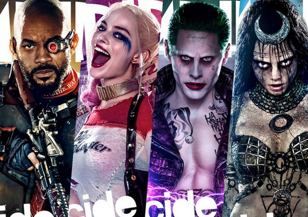

Biệt Đội Cảm Tử: Thành Công Phòng Vé Nhưng Thất Bại Chuyên Môn
Suicide Squad có thể xem là một bước tiến lớn để gã khổng lồ DC Comics tiếp cận thị hiếu của khán giả thời nay và quay lại đường đua siêu anh hùng. Thế nhưng phim mới này có khiến họ đánh mất chính mất?
Có cốt truyện hấp dẫn, một đạo diễn kiêm biên kịch tài năng và một dàn diễn viên khó thể chê vào đâu được, Suicide Squad là một bộ phim hay, đáng xem giải trí và phù hợp với số đông khán giả. Thế nhưng, với những ai trót yêu mến DC Comics và DCEU, bộ phim này có khá nhiều điểm không giống với DC-của-ngày-hôm-qua.
Hãy tạm bỏ qua trilogy Batman quá thành công của Christopher Nolan vì nó gây nên vài tranh cãi về độ chính thống và thường không được tính vào DCEU. Cùng quay trở lại 2013 khi Man Of Steel gây cú nổ lớn với 668 triệu $ doanh thu phòng vé, hoặc xa hơn về cuối tháng 6 của mười năm trước khi Superman Returns được đánh giá khá tốt và doanh thu không đến mức khiến DC Comics và Warner Bros lỗ nặng, ân tượng của người xem dành cho những tác phẩm cộp mác DC luôn là “đen tối, u ám, đen tối hơn nữa và u ám hơn nữa”. Thế nhưng, sau thất bại của Batman v Superman: Dawn Of Justice trước đối thủ Captain America: Civil War, có tin đồn nhà sản xuất đã họp bàn và yêu cầu chỉnh sửa Suicide Squad cho “tươi sáng hơn, hài hước hơn” - những cụm từ thường được nhắc đến khi nói về các phim của Marvel.
Và thế là bộ phim về những tên tội phạm “xấu nhất của xấu, ác nhất của ác” dường như đã trở thành bộ phim chói lóa nhất, hài hước nhất và dễ cảm nhận nhất của DC Comics trong nhiều năm trở lại đây!
Dĩ nhiên, dù mang phong cách nào thì không thể phủ nhận Suicide Squad là một bộ phim hấp dẫn và nếu phải dành một lời khen lớn nhất thì chắc chắn phải là dàn diễn viên vô cùng xuất sắc và hợp vai. Từ thần thái đến cử chỉ, từ ánh mắt đến nụ cười hay động tác đôi tay, Biệt Đội Cảm Tử như được sinh ra cho vai diễn này. Chỉ tiếc một điều, Suicide Squad lại đi vào đúng ngay vết xe đổ của Batman v Superman – Thiếu nhân vật chính. Là Deadshot, là Harley Quinn hay Rick Flag? Người ta có thể chê phim Marvel có nội dung đơn giản, thế nhưng trong hai phần Avengers, Marvel luôn biết chính xác kết cấu của một kịch bản và chọn ra nhân vật quan trọng nhất. Họ trao cho Tony Stark đầy đủ quyền lợi của một nhân vật chính - quyền chủ đạo, quyền thủ lĩnh, quyền phạm lỗi và quyền nhận ra và quyết tâm sửa chữa sai lầm. Không một nhân vật nào trong Suicide Squad có đầy đủ ba quyền lợi này!

Trái với hình ảnh một tên giết người máu lạnh trong hồ sơ chính phủ , Deadshot của Will Smith hài hước, tình cảm, nghĩa khí và cũng có chút ngọt ngào. Thế nhưng, Deadshot dường như quá đơn giản, mọi quyết định của anh diễn ra chóng vánh đến không-thể-tin-được. Không chút suy nghĩ, tự hỏi, dằn vặt. Ngay cả cảnh quan trọng khi anh phải “kéo cò” với một người bản thân không muốn giết cũng diễn ra hết sức chóng vánh. Đây là một vai diễn không có gì khó với nam diễn viên thực lực dày dặn kinh nghiệm như Will. Thậm chí, có thể nói là không xứng với năng lực diễn xuất của anh.
Ngoài việc tính cách nhân vật quá đơn giản, việc Deashot “bị dìm” cũng nhiều khả năng là vì anh đứng cạnh một Harley Quinn vô cùng quyến rũ. Cô nàng cựu bác sỹ tâm lý này thật sự đã “steal the show”. Quyến rũ, điên loạn, chút ngây thơ khờ dại thêm chút sexy đến nghẹt thở, không có điểm gì có thể chê Harley Quinn của Margot Robbie. Dĩ nhiên, trừ việc cô nàng có một nụ hôn với một người không ai ngờ tới – một điều đủ làm nhiều fan hâm mộ truyện tranh lên cơn đau tim giữa rạp chiếu phim.
Gã tình nhân nổi tiếng của cô nàng - Joker cũng là một nhân tố khiến khán giả đứng ngồi yên phấn khích tại rạp. Chỉ xuất hiện chưa được mười phút trên phim nhưng Joker của Jared Leto thật sự khiến người xem ấn tượng sâu sắc. Khó thể vượt qua huyền thoại Heath Ledger, Jared đã thông minh chọn cho nhân vật của mình một lối diễn khác. Nhân vật Joker trong Suicide Squad không giống Joker của Jack Nicholson, không phải Joker của truyện lại càng chẳng phải Joker của Batman của Nolan, hắn là ông vua tội phạm - một kẻ điên loạn có trái tim si tình. Vẻ đẹp soái ca chói lóa màn ảnh và kỹ năng diễn xuất thần sầu của Jared Leto sẽ khiến người xem dù ở phe nào cũng không ghét nổi Joker.
Một nhân vật khác cũng ấn tượng nhất không kém là Amanda Waller của Viola Davis. Không có gương mặt đẹp, thân hình bốc lửa và làn da trắng vì acid như Harley Quinn, Amanda gây ấn tượng bởi bản lĩnh, phong thái lãnh đạo thông minh, sự điềm tĩnh và tính cách vô cùng cứng rắn. Lời thoại của bà được chăm chút nhất phim với những câu từ đanh thép hoặc mang tính “bẫy rập” buộc đối thủ phải im lặng. Đây có lẽ sẽ là một nhân vật quan trọng trong Justice League vào năm sau. Biết đâu chúng ta sẽ có thêm một “kẻ ác” thuộc về chính phủ?
Trái với sự nổi tiếng và được kỳ vọng của bộ tứ trên, diễn viên khác đa số là những người ít tiếng tăm hơn, vai diễn của họ cũng ít được kỳ vọng tạo nên ơn sốt. Thế nhưng, từ Rick Flag của Joel Kinnaman đến Diablo của Jay Hernandez, Enchantress của Cara Delevingne và nhiều nhân vật phụ khác… đều đã làm rất tốt phần việc của mình. Họ gây ấn tượng đủ để khiến người xem mong chờ trở lại trong phần hai của Biệt Đội Cảm Tử vào một ngày không xa.
Nhân vật gây thất vọng nhất phim có lẽ là Katana. Với cách phát âm tiếng Nhật “như hét vào tai”, lối diễn cường điệu và điệu bộ lom khom lấm lét rút kiếm trông không có chút tinh thần võ sĩ đạo nào, Katana chỉ khiến người xem chú ý ở vài đoạn vung kiếm chém người và.. hết. Thậm chí, nhân vật này còn kém quan trọng đến mức đôi lúc đội ngũ làm phim quên cả việc chèn phụ đề tiếng Anh cho câu thoại tiếng Nhật của cô.
Đúng như dự đoán từ trailer, âm nhạc là một điểm sáng lớn và đóng góp không nhỏ vào độ hay của phim. Hẳn trong số vốn khổng lồ 175 triệu $, có không ít kinh phí dùng để đầu tư cho những bản nhạc cực đỉnh của phim. Tuy nhiên, có lẽ vì dùng quá nhiều tiền vào nhạc phim nên nhà sản xuất có phần lạm dụng khiến trong vài phân cảnh nhạc bị lồng ghép vô tội vạ. Dẫu sao, chắc chắn rằng ca khúc cuối phim sẽ khiến kha khá khán giả phải nán lại rạp để nghe và lắc lư theo.
Rút kinh nghiệm từ bộ phim chưa-thành công Batman v Superman, dường như Warner Bros đã can thiệp sâu hơn vào khâu dàn dựng của Suicide Squad. Tuy nhiên, chẳng những không thể khiến bộ phim tốt hơn, sự can thiệp này khiến dấu ấn của đạo diễn kiêm biên kịch David Ayer trở nên mờ nhạt. Suicide Squad ngắn hơn, hài hơn đúng như những gì nhà sản xuất yêu cầu. Thế nhưng, khâu cắt ghép và dựng phim quá tệ khiến những cảnh quay chất lừ của phim được kết nối thành một tổ hợp vụng về. Điểm yếu về kịch bản mà Batman v Superman phải dùng bản phim DVD dài hơn 3 tiếng đồng hồ để khắc phục được lặp lại y chang trong Suicide Squad. Và giờ đây, chúng ta phải chờ ngày ra DVD để thưởng thức một phiên bản trơn tru hoàn hảo hơn tại nhà – nơi không có màn ảnh cực lớn và một hệ thống âm thanh sống-động-từng-giây.
Cho qua một Deadshot thiếu nổi bật, Harley Quinn nổi bật hơn mức cần thiết ngàn lần và một Joker “soái ca ngôn tình” thay vì “cuồng si” Batman, Suicide Squad vẫn vô cùng hấp dẫn. Thế nhưng, khi ngày ra mắt Justice League chỉ còn hơn một năm nữa, những ai đang yêu mến DC Comics có lẽ nên kiến nghị nhà sản xuất thay ngay đội ngũ dựng phim hơn là rủ nhau chọi cà chua vào Rotten Tomatoes!